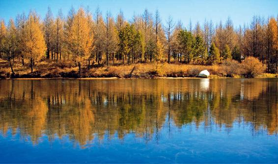

湿气是引起现代人亚健康的一个非常重要的因素，比如，秋冬季的感冒咳嗽和初秋出现的肠道问题，以及气虚等，都跟湿气有关。
每年防范湿气的关键时期，是从大暑节气开始到白露节气为止，因为这俩月是一年中湿气对我们身体影响最重的。
南方地区有梅雨季节，而西部一些地区也会有雨季，这时候雨水虽然很多，但并不是防范湿气最关键的时期，实际上，防范湿气都是从每年的7月下旬开始的。
这是为什么呢？因为6月正值仲夏，虽然雨水很多，但天地之间的阳气也很充足，所以人体有足够的阳气去对抗湿气。
但从大暑节气开始，阴气渐渐生长，天地之间的阳气慢慢地弱了。
实际上，我们平时所说的三伏，“伏”并不是热的意思，而是指伏阴在下，就是说阴气在地下埋伏着，它是一点一点生长的。
出伏之后，阴气就不再是埋伏的了，而是正大光明地要出来，这段时间，天地之间的湿气很重，而人体的阳气已经没有仲夏的时候那么强了，所以人对于湿气的抵抗力也会变弱。
这就是每年从大暑节气到白露节气要重点防范湿气的原因。
在大暑节气到白露节气这段时间，是祛湿的关键，其中，祛湿的重点还有所区别。
第一，大暑节气的祛湿，主要是祛暑湿，是以清热祛湿为主，而且主要是清热。
第二，到了立秋节气的时候，除了以祛湿为主，还要补气。补气祛湿的功课要做整整一个月，也就是说，在立秋到处暑节气的这一个月里，我们都要补气祛湿。
只是立秋和处暑这两个节气补气祛湿的重点部位不一样。
第一，立秋节气的时候，补气祛湿的重点部位在人体的中部，也就是肝胆、脾胃系统。
第二，到了处暑节气的时候，补气祛湿的重点部位就到了人体的下部，也就是肾和膀胱系统。
第三，到白露节气的时候，天气变燥，人体内部还有湿，容易出现上燥下湿的现象，要润燥和祛湿兼顾。
立秋节气之后，防范湿气是重中之重，原因是这时候秋雨多。当白天气温很高的时候湿气蒸腾而上，一早一晚天气比较凉的时候，湿气往下走，就会侵袭人体的下半身。
在传统的养生学里，把湿气作为一种病邪来对待，认为它是一种外来的会造成人体生病的病气。
湿气的特点像水一样，它是往下走的，所以不管是自然界的外湿，还是人体的内湿，同样都是往下走的。
立秋后，天地之间的湿气都会往下走，所以立秋之后是防范湿气的一个非常重要的时期。
立秋和处暑节气，补气祛湿的重点部位不同的原因,就是湿气是逐渐往下走的。湿气在人体内越深入、越往下走就越顽固，越难以清除。
为什么说秋天这段时间是祛湿的一个重中之重的关键期呢？
人体刚感受到外湿的时候，还是比较容易把它清除掉的，但如果湿气没有被及时清除掉，它就会慢慢盘踞在人体的下半部，而且变得非常顽固，它会潜伏起来，到了冬季就会出来作怪。
这就是为什么我们在秋冬季容易咳嗽、痰多，有支气管炎、关节炎等毛病的原因。到了这个时候再想清除湿气，就变得非常困难了。
这也是为什么从大暑节气开始，我一直在反复强调用各种各样的茶方和食方来祛湿的原因。
造成我们人体湿气的原因可以被分成两大类：一类是外湿，一类就是内湿。
外湿是由外界环境的湿气造成的，在这样一个时节，我们重点是要祛除外湿，但并不是说内湿就不重要，内湿其实伤害更大。
这是因为在祛湿的过程中是有先后顺序的，夏秋是外湿气最重的时候，我们的重点就是把身体刚刚感染到的外湿尽快地祛除掉，因为这个时候祛除外湿，是比较容易的。
内湿是由人体自身的原因造成的。
有些朋友身体内有湿，而且是日积月累下来的，一年四季都有，这样的内湿，我们就可以在一年四季中慢慢地来调理。
立秋节气这段时间，我分享的调理身体湿气和各种亚健康症状的一些方子，您可以根据自己的情况，先选应时应季、最急需调理的来做。

而对于一些常年湿气重的朋友，您可以先把初秋的外湿祛掉，然后再着手调理自己陈年累积的、湿气导致的脾虚、便溏等问题。
我们按照这样一个先急后缓的顺序，就可以循序渐进地把自己的身体由外而内地调理好。